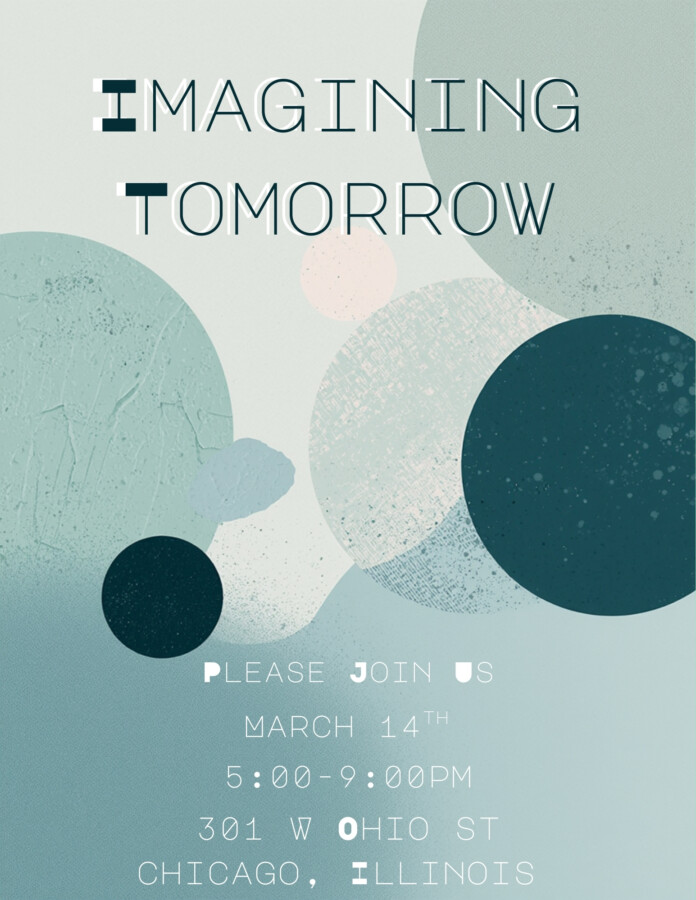

Imagining Tomorrow – Closing Reception
About the event
The exhibition asks fundamental questions about the future of art, culture, and community, positioning Forum 301 as a space not only for presentation but for inquiry, dialogue, and experimentation. How do we imagine what comes next when the present feels uncertain, fragmented, or in flux? Through diverse practices and perspectives, the exhibition considers how artists respond to and shape evolving cultural landscapes, and how creative work can function as both a mirror and a catalyst. At its core, the show reflects Forum 301’s commitment to supporting artists who engage critically with the world around them while remaining open to risk, curiosity, and possibility.
In asking what it means to dream beyond the present moment, the exhibition moves across social, political, environmental, and spiritual terrain, emphasizing that the future is not singular or fixed but collectively constructed. It invites artists and audiences alike to pause, reflect, and reimagine, recognizing art as a vital tool for envisioning alternative futures and strengthening community bonds. In alignment with Forum 301’s broader mission, the exhibition creates space for conversation, connection, and forward thinking, reinforcing the gallery’s role as a living platform where ideas are tested, voices are amplified, and tomorrow is actively imagined rather than passively awaited.
Featured Artists include:
Alexander Gouletas | Daniel Miller | Elizabeth Herwaldt | Emily J Casella
Félix Mirel | Paulina Inigo | Reggie McFly | Thair Thursday | Victoria Pater | Violet Luczak